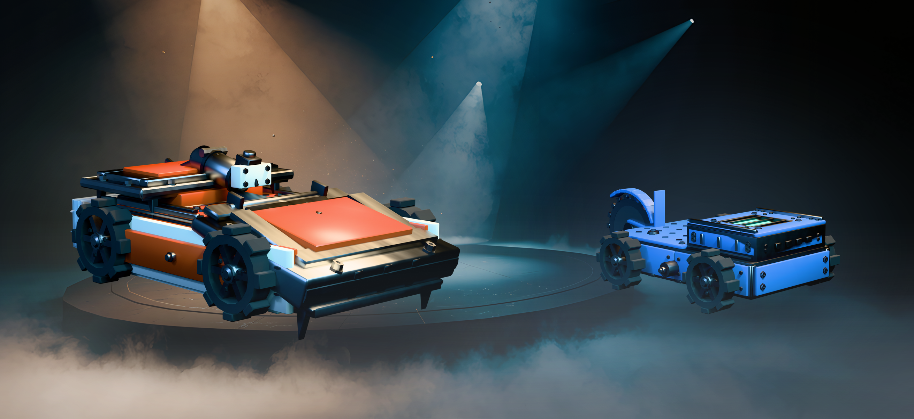
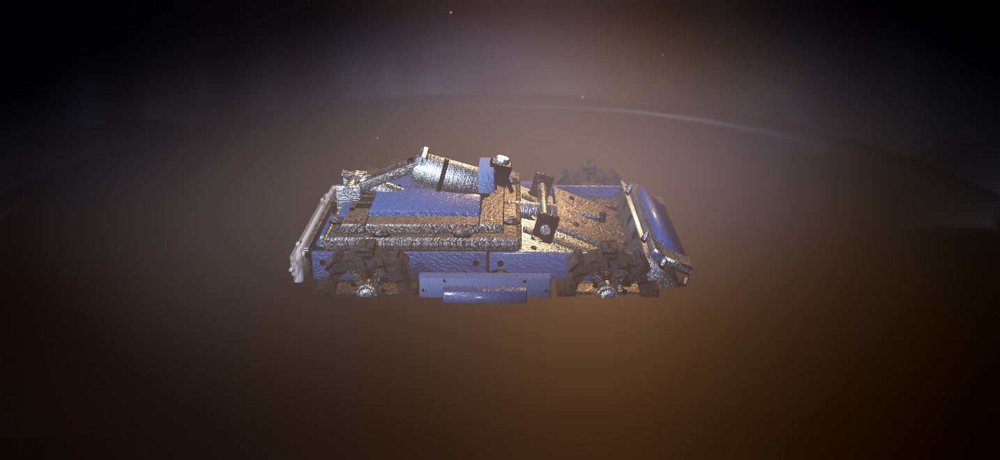
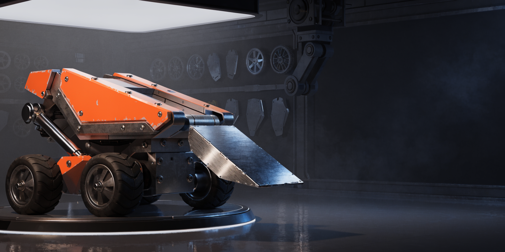
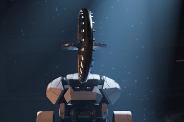
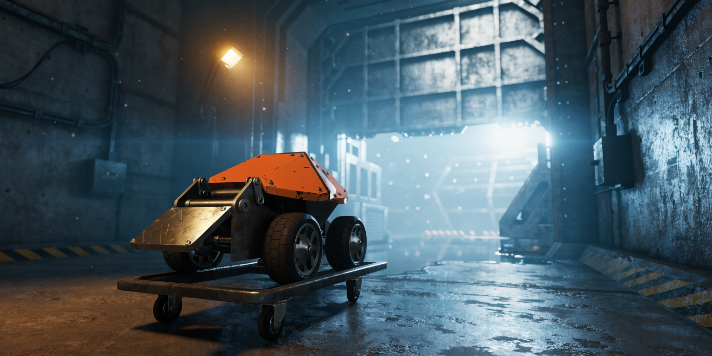
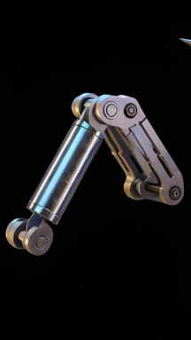
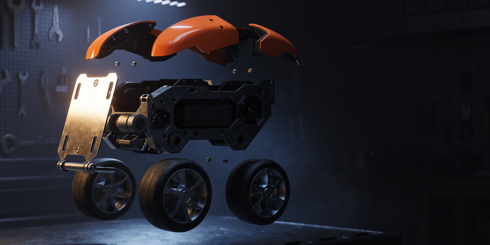

Menu and garage, v2
The v1 page was turned down because the machines and the stage looked like toys, not because of the layout. So this round starts with the pictures. Every large image marked target, not current models is a Recraft render of where our part models, materials, lights and stage need to get to. The interface on top is HTML at iPhone landscape proportions (2868 by 1320, safe areas and the Dynamic Island drawn in). The research behind the numbers, and the full light, camera, material, post and interface spec, is in docs/look/reference-study.md (section 3).
Three main menus, two garages, then the honest part: what our engine draws today next to the target, and what it would take to close the gap.
Current against target
Left: what we draw today. The top pair is a live frame from the real engine (Godot 4.6, Forward+, the menu camera and the workshop stage, captured on the Mac on 24 September). The middle pair uses the v1 Blender render of our real parts. Right: the target.






Why ours reads as a toy, in order of how much it costs us
- No bevels, so no highlights. Every edge is a hard 90 degree corner. On the target every major edge is rounded 4 to 8 mm (double ours, and at menu distance ours are only 2 to 4 pixels wide) and each one catches a thin bright line. That line is most of what reads as "expensive".
- Normal maps that fight the shape. In the engine frames the steel and paint shimmer like crumpled foil. The detail is too strong and too fine for the viewing distance, so it becomes noise. Target surfaces are smooth, with detail only where it tells a story: bolts, seams, chipped edges.
- Paint without clearcoat. Our livery is a flat colour at one roughness. The target paint has a lacquer layer that holds a sharp reflection of the strip light above a softer colour coat, and the metal underneath shows only where edges have been hit.
- Silhouettes built from boxes. The target machines use curved shells, tapered wedges, angled cheek plates and fat tyres. Same parts, same sockets, better shapes.
- The camera and the light. Our menu camera is high and far, the machine is small, and a single warm pool lights everything the same. Target: camera at wheel-top height, a 50 mm look, the machine 40 percent of the width, a key, a fill at a quarter of the key, and two cold rims slightly brighter than the key, plus a softbox and two strip lights that exist only to be reflected.
- The floor. Ours is flat brown with a white ring. The target floor is dark and glossy, reflects the machine, and dry ice moves across it.
Main menu, three options
All three keep the rule from the design system: the menu leads with what happens next, one primary action, everything else quieter. Tiles are photographs of real places in the game, not icons. The focused tile is lifted and lit and carries a white plate; the others sit at half brightness. No outlines, no accent bars.
Showroom
The Gear.Club Stradale model, straight: your machine alone on a turntable under showroom light, five tiles along the bottom, the next opponent as a card.

What it is
The calmest of the three and the closest to the reference the owner named. The machine is the whole picture. Tiles change the stage, not just the text: focusing Workshop swings the camera to the flipper side; focusing Events dims the key and brings the arena rig lights up behind.
What makes it alive
Turntable at 5 degrees a second. The camera drifts plus or minus 7 degrees over 23 seconds and 4 cm over 17, never repeating visibly; focus pulls to whatever the tile refers to. The strip light slides along the paint as it turns. Dry ice crawls at 0.15 m/s. Sound: low room tone, a soft servo whirr when the turntable eases, a dry click and a rising tick on tile focus, a weighted clunk on select.
Attract mode (after 25 s idle)
The tiles slide down and out in 0.4 s. The camera starts a slow 40 second orbit, stopping for three close-ups (the flipper hinge, a chipped plate, a tyre), each a 2 second focus pull. The flipper fires once, slowly, and the rig lights answer with a flicker. Any touch brings the tiles back in 0.25 s.
Face-off
The arena floor at night: your machine large in the warm light on the left, the next opponent across the floor in cold light on the right and Continue career between them.
What it is
The menu is the moment before the fight. It answers "what is next" without a single word, which is the rule the design system already asks for. The primary is a solid white chamfered plate between the two machines, so the eye goes machine, machine, button. The tile row is a quieter second rank.
What makes it alive
The opponent's disc idles at a low spin with a faint hum and a glint every revolution. Your machine settles on its suspension and the flipper twitches every 6 to 9 seconds. The camera dollies 20 cm in and out on a 12 second breath and holds the rack focus on you; tapping the opponent's name pulls focus across in 0.6 s and shows their card. Sparks drift through the rig beams. Sound: arena room tone, distant crowd murmur, the spinner hum panned right.
Attract mode
A broadcast style intro loop: each machine gets a 4 second pass, a low dolly along its flank with a light sweep, then a wide shot where both rev and back off. After a win, the loser is gone and the next opponent rolls into the cold light.
The tunnel
Your machine waiting on a pit trolley in the entry tunnel, the arena gate half open behind it; the options are a big type list rather than tiles, with a small tile row for the rest.
What it is
The most cinematic and the most unusual. It borrows the GT7 idea that the menu is a place, and the Forza idea that the next event lives behind a door. The downside is a second stage to build and light, and a list is less browsable than tiles once there are more modes.
What makes it alive
Light pours through the gate in volumetric shafts, with dust drifting through them. The work lamp buzzes and flickers once a minute. When Continue is pressed, the gate rises the rest of the way, the trolley rolls forward and the camera follows the machine out into the arena, which is the loading transition. Sound: tunnel reverb, the far crowd through the gate, the lamp hum.
Attract mode
The gate cycles: it drops, the tunnel goes to the warm lamp only, a pit crew silhouette (no faces) crosses the light, the gate lifts again and the opponent is glimpsed rolling past the opening.
Garage, two options
Both keep the machine live on the left and the interface on the right, as the design system says, and both follow Armored Core VI: every part change shows its effect on the stats as green and red deltas before you commit. The weight budget is always on screen, because weight is the real decision in this game.
Assembly bay
The machine on a lit turntable in a clean engineering bay, part categories as a tile row along the bottom, the part list with stat deltas in one panel on the right.
Flipper, fitted16 kg Vertical spinner21 kg
Vertical spinner21 kg Axe18 kg
Axe18 kgWhat it is
The Armored Core pattern made calm. Six category tiles along the bottom, the one in use lifted and white. One panel, one list, one set of bars. Choosing a category turns the machine so that part faces the camera (0.5 s ease, never a cut) and the key light narrows onto it.
What makes it alive
Moving through the list swaps the part on the machine live, with a 0.15 s drop and a small bounce on the suspension, a pneumatic hiss for flippers, a ratchet for bolted parts. The ring light in the turntable rim brightens as the weight nears the limit and turns amber over it. The gantry arm in the background moves to the part being changed. Sound: bay hum, tool clinks, a torque wrench on confirm.
Idle
After 15 s the panel fades to 30 percent and the turntable turns a full slow revolution at 5 degrees a second while the camera drifts. Touch anywhere and it returns to the part you were on.
Exploded bench
The machine comes apart over a workbench, every part floating a hand's width from its socket; the chosen part is pulled forward and lit, the parts to choose from are a tile row of hero-lit pieces.